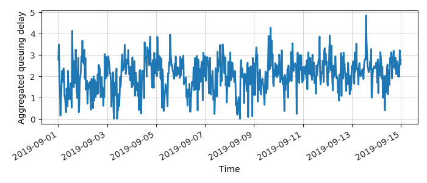
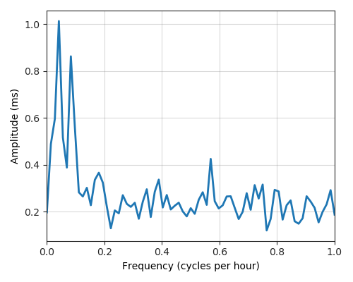

---
layout: default
title: Last-mile delay survey / 2019-09-01 / AS23523
---
AS23523, VOYAGEURINTERNET-1, CA
Summary
- Daily last-mile fluctuations: mild
- Number of probes: 3
- APNIC eyeball rank: 19043
- Daily fluctuations: True
- Main frequency: 0.0417
- Average peak-to-peak amplitude: 1.01ms
Aggregated last-mile queuing delay

Periodogram

24H profile
Probes' last-mile RTT